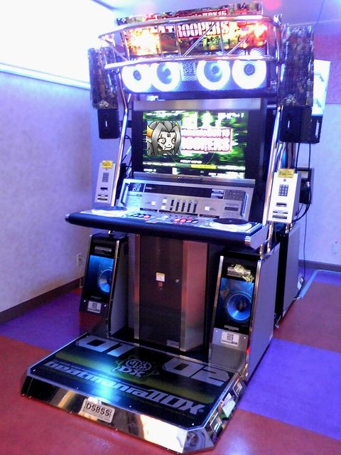

| No.26 | Vipmania IIDX 20 Lolicoro |
 |
|
| 未提出 最終更新：---- 感想掲示板 | |
| 作者 | デルタ |
| ジャンル | 音げー |
| ツクール | 2000 |
| 配信／投稿 | どちらも自己責任且でお願いします |
| 作者コメント | |
|
今回のために作っている曲は完成しておらずシステムも完成していない。 ていうか既にSSをエターなってしまった… ヽ | | | |／ 三 す 三 /＼＿＿_／＼ 三 ま 三 ／ ／ ,、 ＼ :: ＼ 三 ぬ 三. | （●）, 、（●）、 | ヽ | | | |／ ／| | | |ヽ . | | |ノ(、_, )ヽ| | :: | 三 す 三 | | |〃-==‐ヽ| | .::::| 三 ま 三 ＼ | | ｀ニニ´. | |::／ 三 ぬ 三 ／｀ー‐--‐‐―´´＼ ／| | | |ヽ | |
| 管理人コメント | |
| まだ謝るような時間じゃない！ | |
←前の作品 トップ 次の作品→